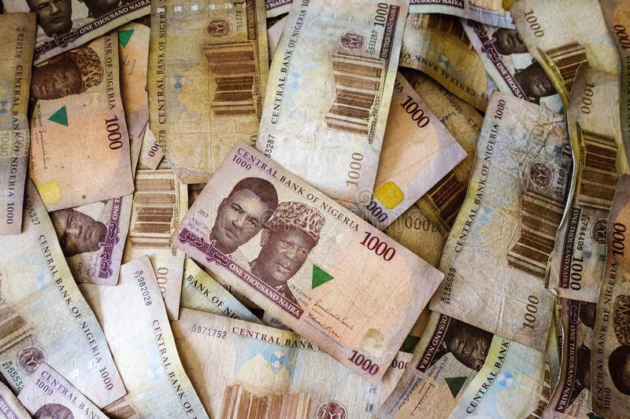

History of Nigerian Currency
Currency | History of Nigerian Currency | Legal Tender | Currency Gallery | Security Features | Features of Nigerian Currency | Clean Notes Policy | eNaira
During the pre-colonial era, different cultures used a variety of items as means of exchange. These included cowries, manilas, beads, bottles and salt amongst others.
The first major currency issue in Nigeria was undertaken sequel to the colonial ordinance of 1880 which introduced the Shillings and Pence as the legal tender currency in British West Africa. The units of coins managed by the Bank of England were one shilling, one penny, 1/2 penny and 1/10 penny and were distributed by a private bank, the Bank for British West Africa till 1912.
From 1912 to 1959, the West African Currency Board (WACB) issued the first set of banknotes (insert hyperlink) and coins in Nigeria, Ghana, Sierra Leone and the Gambia. The highest banknote denomination was one pound, while the one shilling coin was the highest coin denomination.
On 1st July, 1959 the Central Bank of Nigeria (CBN) issued Nigerian currency banknotes, while the WACB-issued banknotes and coins were withdrawn. It was not until 1st July, 1962 that the currency was changed to reflect the country’s republican status. The banknotes which bore the inscription, ’FEDERATION OF NIGERIA‘, now had, ‘FEDERAL REPUBLIC OF NIGERIA’, inscribed at the top. The notes were again changed in 1968 following the misuse of the currency banknotes during the civil war.
Sequel to the decision by the government to change from the metric to decimal, the name of the Nigerian currency was changed in January, 1973. The major unit of currency which used to be £1 ceased to exist and the one naira which was equivalent to ten shillings became the major unit, while the minor unit was called the kobo; hundred of which made one naira.
On 11th February 1977, a new banknote with the value of twenty naira (₦20) was issued. It was the highest denomination introduced at the time as a result of the growth of the economy; the preference for cash transactions and the need for convenience.
The banknote was the first in Nigeria to bear the portrait of a prominent Nigerian citizen, the late Head of State, General Murtala Ramat Muhammed (1938-1976) who was the torch bearer of the Nigerian Revolution in July, 1975. The note was issued on the 1st anniversary of his assassination as a fitting tribute to a most illustrious son of Nigeria. He was declared a national hero on 1st October 1978.
On 2nd July, 1979, new currency banknotes of three denominations, namely ₦1, ₦5 and ₦10 were introduced. These notes were of the same size i.e. 151 X 78 mm as the ₦20 note issued on 11th February, 1977. In order to facilitate identification, distinctive colours were used for the various denominations. The notes bore the portraits of three eminent Nigerians, who were declared national heroes on 1st October, 1978. The engravings at the back of the notes reflected various cultural aspects of the country.
In April 1984, the colours of all the banknotes in circulation were changed with the exception of the 50 Kobo banknote to arrest the currency trafficking prevalent at the time. In 1991, the 50K and ₦1 were both coined.
In response to the expansion in economic activities and to facilitate an efficient payments system, the ₦100, ₦200, ₦500 and ₦1000 banknotes were introduced in December 1999, November 2000, April 2001 and October 2005 respectively.
On 28th February, 2007, as part of the economic reforms, ₦20 was issued for the first time in polymer substrate, while the ₦50, ₦10 and ₦5 banknotes; as well as ₦1 and 50K coins were reissued in new designs, and the ₦2 coin was introduced.
On 30th September, 2009 the redesigned ₦50, ₦10 and ₦5 banknotes were converted to polymer substrate following the successful performance of the ₦20 (polymer) banknote. Thus, all lower denomination banknotes were now printed in the polymer substrate.
Finally, the CBN, as part of its contribution towards the celebration of the nation’s 50th anniversary of Nigeria’s Independence and 100 years of its existence as a nation, issued the ₦50 Commemorative polymer banknote on 29th September, 2010; and the N100 Commemorative banknote on 19th December, 2014 respectively.